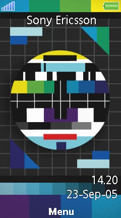

Preloaded on: Aino (U10i)
Supported models: Aino (U10i)
Platform: DB3350
Resolution: 240x432
Screenshots



⬇️ Download this Theme
Preloaded on: Aino (U10i)
Supported models: Aino (U10i)
Platform: DB3350
Resolution: 240x432